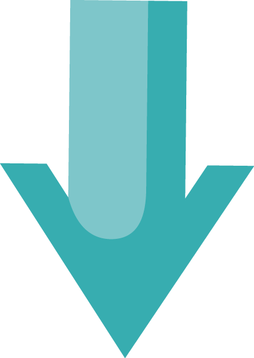
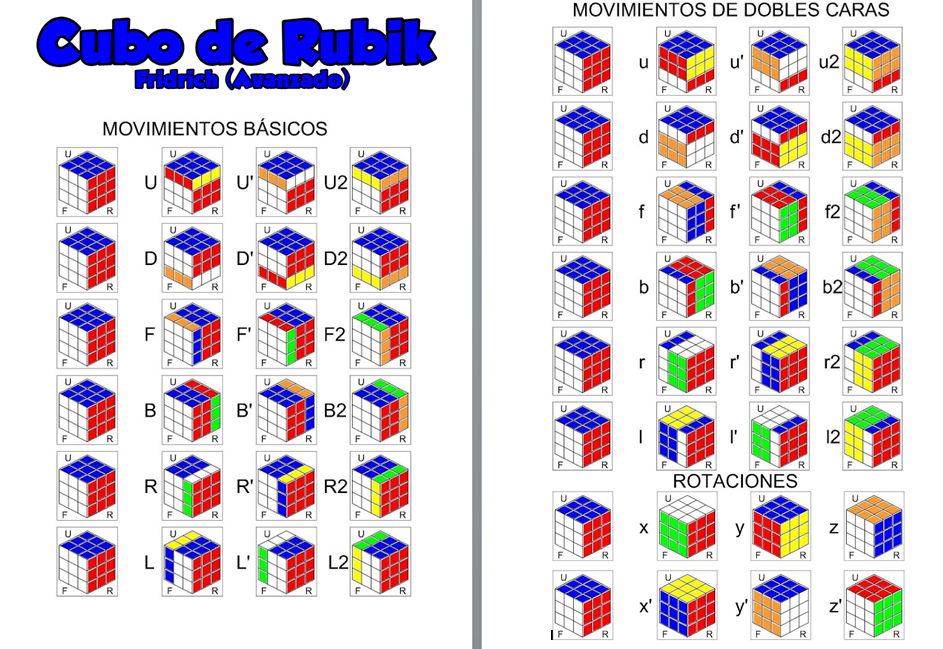

¿Como armar el cubo rubik 3x3x3?
Antes de aprender armar el cubo rubik debes de saberte la notacion del cubo rubik
¿Què son las notaciones del cubo rubik?
Para poder leer y escribir series de movimientos se usa la notación que seguidamente explicaré.
El cubo tiene 6 caras, a cada cara se le asigna una letra diferente, esta letra significa dar 1/4 de vuelta a la cara en sentido horario. La rotación en sentido antihorario se anota con un (') después de la letra. Si una cara tenemos que moverla 1/2 vuelta se pone un número 2 después de la letra.
- F:Front-Frontal
- U:Up-Superior
- D:Down-Inferior
- R:Right-Derecha
- L:Left-izquierda
- B:Back-Posterior

Esta pagina esta en proceso pronto se terminara con el metodo completo para armar el cubo rubik
Pagina creada por DiegoBlanco